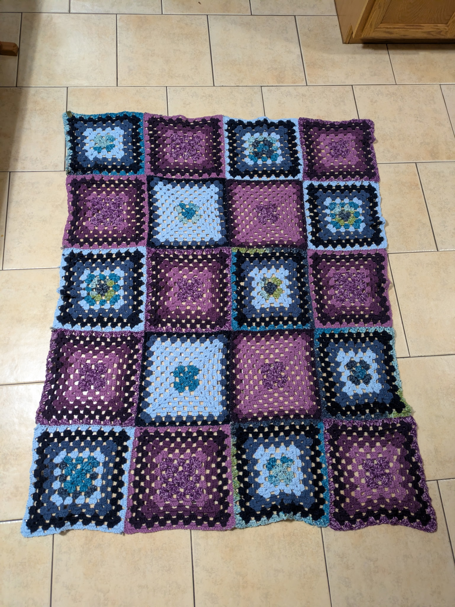
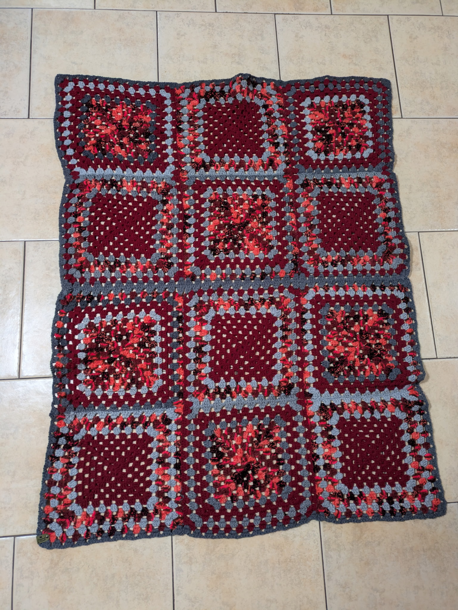
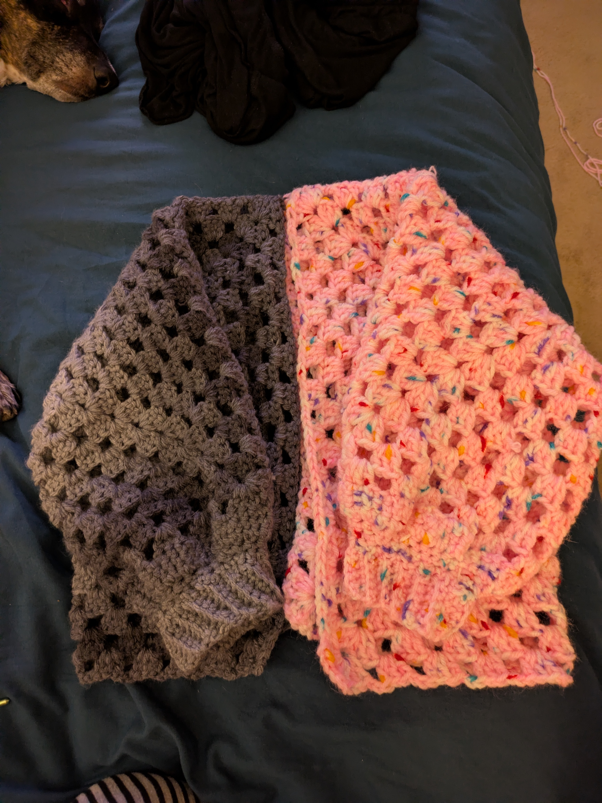
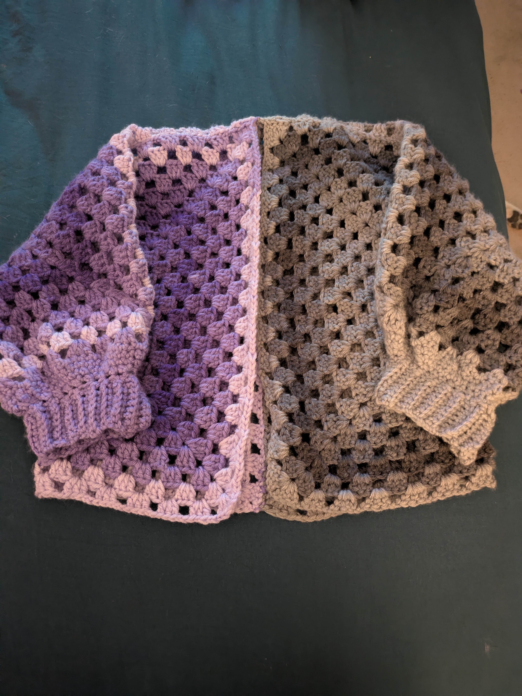

Danielle has a passion for crochet and has created many beautiful projects just in the past year. She decided in 2025 to learn and has
made different items for family members and friends. Some of her favorite crochet projects include:
Blankets: Danielle loves making cozy blankets for her family and friends. She often uses soft yarns and vibrant colors to create a unique piece for the unique person.


Cardigans: Danielle enjoys crocheting cardigans that are both stylish and comfortable. She made several with the chosen colors of her daughters.


Baking
Another one of Danielle's favorite interests is baking. She loves experimenting with different recipes and flavors to create
delicious treats. Some of her favorite baked goods include:
Chocolate Chip Cookies: Danielle experimented with different flavors to create a unique variety of cookies.
Banana Bread: Danielle's banana bread is moist and flavorful, with just the right amount of sweetness and a special touch that screams Fall.
Tiramisu:While technically not baking this is one of Danielle's favorite desserts. She has experimented with a few varieties of tiramisu but thinks the original is the best.
Biscotti Danielle loves making biscotti, she will often make different variations of a family recipe to create something brand new, to include Pumpkin spice biscotti and brownie chocolate chip biscotti.
Gaming
One of Danielle's other favorite intetests is Gaming. she plays a variety of games that vary in genre such as:
Borderlands 4
Diablo IV
Stardew Valley
Cult of the Lamb
Danielle often plays on her PC but also enjoys playing games on her Nintendo Switch 2 and her steamdeck. Which she loves.
Learn about Steam Deck